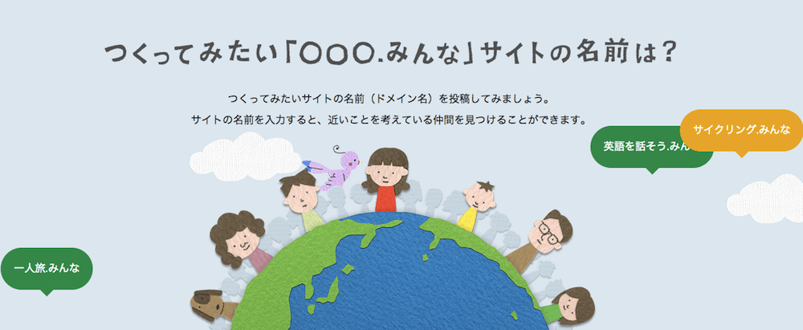
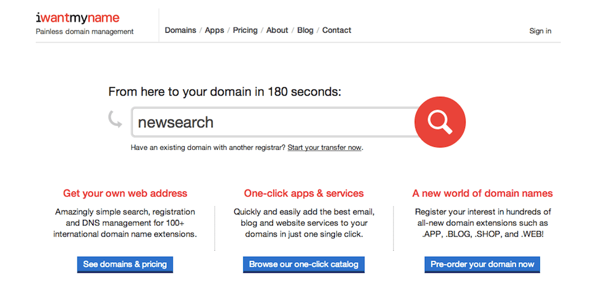

August 12, 2014


So first, a definition—”Domain hijacking or domain theft is the act of changing the registration of a domain name without the permission of its original registrant.”
And yes, domain hijacking does indeed happen, so you should be absolutely certain that your domain is as safe as possible.
Read more →
August 9, 2014

We’ve now launched more than 150 new generic top-level domains (gTLDs), and as expected, they’re each experiencing different levels of popularity. Some, like .berlin, .club and .在线 are doing quite well, but none have blown up to the level of mass acceptance—none are considered normal yet.
To get to that point, we need to start seeing more of these sites in the wild. Ideally, a big brand will kickstart the movement by transitioning their .com to a new gTLD, but there are already a number of sites that have made the switch. Here are a few of the best/most interesting we’ve found so far.
Read more →
August 7, 2014

From the Official Gmail Blog:
In 2012, an organization called the Internet Engineering Task Force (IETF) created a new email standard that supports addresses with non-Latin and accented Latin characters (e.g. 武＠メール.グーグル). In order for this standard to become a reality, every email provider and every website that asks you for your email address must adopt it. That’s obviously a tough hill to climb. The technology is there, but someone has to take the first step.
Today we’re ready to be that someone. Starting now, Gmail (and shortly, Calendar) will recognize addresses that contain accented or non-Latin characters. This means Gmail users can send emails to, and receive emails from, people who have these characters in their email addresses. Of course, this is just a first step and there’s still a ways to go. In the future, we want to make it possible for you to use them to create Gmail accounts.
Read more →
August 6, 2014

If there’s one piece of advice we could give to someone who is starting a website or blog, it’s that you should take some time to pick the right web platform for your needs. Some are great for blogging, some for e-commerce, some for being social. And there’s always the option of creating something entirely custom—although you’d either need some web development know-how or the resources to hire someone. Most sites though (including many of the biggest on the web) are created with one of the many platforms currently available.
For absolute beginners, we usually recommend a hosted solution—the platforms that bundle modern content management systems (CMS) with hosting space. They can cost a bit more, and you’ll lose some development flexibility, but the benefits of using something that’s truly plug-and-play often outweigh the lack of control.
But if you’re comfortable managing your own hosting space, you’re open to a whole world of platforms that give you control over even the smallest details. And the most popular of these platforms is WordPress (.org, not .com, which is a hosted platform), which in 2013 made up 18.9% of the internet and was downloaded 46 million times.
If WordPress is something you’re looking into, here’s a rundown of how to link your iwantmyname domain to Bluehost, one of our favorite web hosts.
Read more →
August 1, 2014

July was a bit of a slow month for new generic top-level domain (gTLD) launches, with only four cracking the 5,000-registrations mark so far: .voting, .services, .kaufen, and .tokyo, which is now the 20th most popular gTLD overall. But things may be looking up for August, with nine gTLDs containing less than five characters (it’s thought that four or less may be the sweet spot for TLD popularity).
Especially interesting is the August 13th launch of four medical-specific gTLDs: .care, .clinic, .dental, and .surgery. The usefulness of being able to type in something like LOCATION.clinic to get a relevant result is undeniable, so it wouldn’t be at all surprising to see some of these take off.
Read more →
July 31, 2014
We’re big fans of all the new generic top-level domains (TLDs) coming out, but we have a fascination of sorts with the extensions that are particularly off-kilter. The ones that probably won’t be used for traditional company websites and blogs, but for strange creations and alternative microsites.
Next week, we have three launching—.fail, .rocks, and .wtf. And we don’t really have any expectations on their registration numbers, but we’re super interested in seeing what kinds of domains get created.
Read more →
July 30, 2014

You rarely think about the cogs that make things work when you’re browsing a site, but I’d like to direct your attention to our domain search—the big search bar on the homepage that lets you search for and buy domain names.
Read more →
July 29, 2014
From Flavio Martins – DigiCert:
On July 26,2014 at 12:15 PM, some customers and users on sites secured by DigiCert reported that they were getting an untrusted certificate error.
The problem is related to a locally installed legacy intermediate certificate that is no longer used and no longer required for the certificate installation. The problem can affect any client platform with a locally cached or installed intermediate certificate.
We use (and really like) DigiCert for SSL, but it looks like there’s been a minor hiccup for some users. If you’re getting an untrusted certificate error when you visit iwantmyname, this is a great (and easy) step-by-step guide on how to fix it.
And if you need any additional help, definitely let us know.
July 25, 2014
We typically like to spare our customers the politics of the web, but Vint Cerf, the “father of the internet” (who now works for Google) recently narrated a great video explaining the transition of internet oversight from the influence of the NTIA (a US government organization) to the more global ICANN.
It’s short, educational, and has a great frame at 2:22 where a drawn depiction of Vint Cerf is sitting on top of a giant angry cat under a rainbow (I believe he just won the internet).
Read more →
July 25, 2014


We regularly post articles to help you get started with your own website, whether it’s expected costs for a business site, how to economically showcase your photos, or really easy ways to get a domain and site up and running.
But then what? In the same way that just buying a domain won’t magically make a website appear, getting your website online won’t magically make customers, audience, or community appear. As a side note, while SEO can be an important part of building your presence online, we’re not going to get into it in this post, as that’s a whole other big, complex topic. For an intro though, this is a great start.
Let’s take a look at some things to think about and research. We’ll also get into some actions to take to build your profile and engagement online and encourage people to visit your site. You could be trying to grow your customer base, build a community, or assemble an audience/fan base. People are people no matter how you’re interacting with them, so these tactics can be broadly applied.
Read more →
Older posts